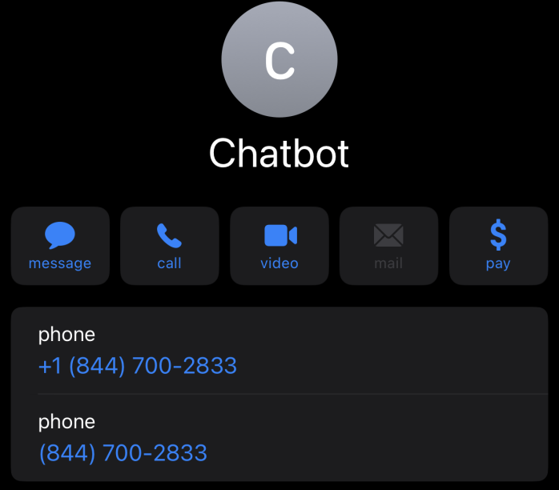

It takes at maxiumum around 10 seconds for the chatbot to respond so wait a sec. If you still don't see anything, then look at all your messages. You may have to create a contact for the chatbot like below since the number of the chatbot sending mms messages may differ from the one sending sms messages.
